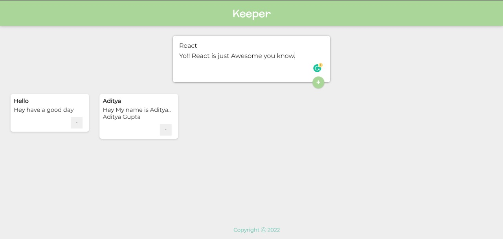

Keeper App
The app is developed using react.js. The application isn't designed by me,
the application is developed during my learning and practice session of react.js development. The application
is about storing the note or thought written by you, but it can't store the data permanent as it is not
connected with my any cloud-based database.
And a huge thanks to my mentor, my inspiration "Angela Yu" who taught me all this stuffs.
Visit